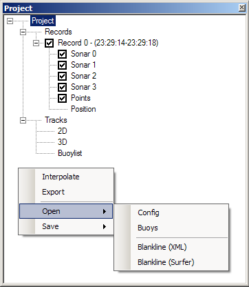

|
||||||

|
Das Projektfenster dient der Verwaltung der Records (Aufnahmen) und als Ausgangspunkt für Sonarschnitte und das 2D-Betrachtungsfenster. Die Darstellung erfolgt mittels einer Baumstruktur, wobei das Projekt selbst die Wurzel darstellt. Darunter gliedern sich die Aufnahmen, welche wiederum mehrere Sonare enthalten können. Weiterhin besitzt eine Aufnahme eine Liste für manuelle Punkte und eine Liste zur Verwaltung der Positionsdaten aus angeschlossenen und für das Programm konfigurierten Vermessungsgeräten (GPS, Kompass, etc.). Zuletzt untergliedert sich das Projekt noch in die Spurverfolgungs-Ansichten 2D, 3D (noch nicht implementiert) und die Bojenliste. Letztere kann z.B. zur Navigation oder Markierung verwendet werden. Mehr dazu im Abschnitt Bojen und Korridore.  Bei Betätigung der rechten Maustaste öffnet sich ein auf den jeweils im Projektbaum ausgewählten Knoten zugeschnittenes Kontextmenü. Als Beispiel ist in der oben stehenden Abbildung das Menü für das Projekt dargestellt. Die Menüpunkte sollen im Folgenden kurz erläutert werden.
|